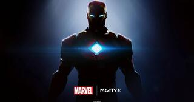
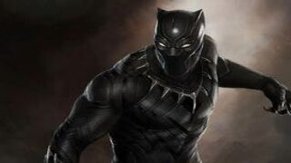
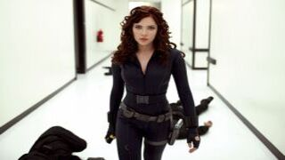
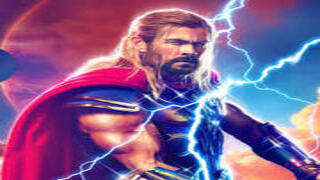

El origen del Capitán América se remonta a principios de 1941, cuando la industria del comic book aún estaba configurándose. Aunque en aquellos años los Estados Unidos aún no se habían implicado en la Segunda Guerra Mundial, en los kioscos ya habían comenzado a aparecer publicaciones protagonizadas por superhéroes vestidos con uniformes patrióticos, siendo el primero de estos The Shield de MLJ Magazines Inc. Martin Goodman, propietario de la editorial Timely Comics (la actual Marvel Comics), decidió aunar sus sentimientos antinazis y su instinto editorial, por lo que encargó a los artistas Joe Simon y Jack Kirby que crearan un nuevo personaje patriótico, el Capitán América.

Iron Man
Anthony Edward "Tony" Stark
Anthony Edward Stark es el hijo del jefe de Industrias Stark, Howard Stark y su esposa Maria Stark. Un niño genio que ingresa al MIT a la edad de 15 años para estudiar Ingeniería Industrial. Después de que sus padres mueren en un accidente automovilístico, hereda la compañía de su familia.

Black Panther
T'Challa
Pantera Negra es el título ceremonial otorgado al jefe de la tribu Pantera de la avanzada nación africana de Wakanda. Además de gobernar el país, también es el jefe de sus diversas tribus (colectivamente denominadas Wakandas). El traje de Pantera es un símbolo de la oficina (jefe de estado) y se utiliza incluso durante misiones diplomáticas.

Black Widow
Natalia Alianovna Romanova
Natasha nació en Stalingrado (ahora Volgogrado), Rusia. La primera y más conocida Viuda Negra, es una agente rusa entrenada como espía, artista marcial y francotiradora, y equipada con un arsenal de armas de alta tecnología, que incluye un par de armas energéticas montadas en la muñeca y apodada "Piquete de la Viuda".

Thor
Thor Odinson
El padre de Thor, Odín, decide que su hijo necesita que le enseñe la humildad y, en consecuencia, coloca a Thor (sin recuerdos de la divinidad) en el cuerpo y los recuerdos de un estudiante de medicina humana existente, parcialmente discapacitado, Donald Blake. Después de convertirse en médico y de vacaciones en Noruega, Blake presencia la llegada de una partida de exploración alienígena. Blake huye de los extraterrestres a una cueva. Después de descubrir el martillo de Thor, Mjolnir (disfrazado como un bastón) y golpearlo contra una roca, se transforma en el dios del trueno. Más tarde, en Thor# 159, se revela que Blake siempre ha sido Thor, el hechizo de Odin lo ha llevado a olvidar su historia como El Dios del Trueno y creerse mortal